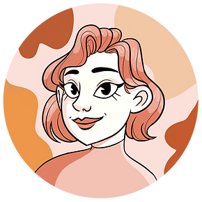
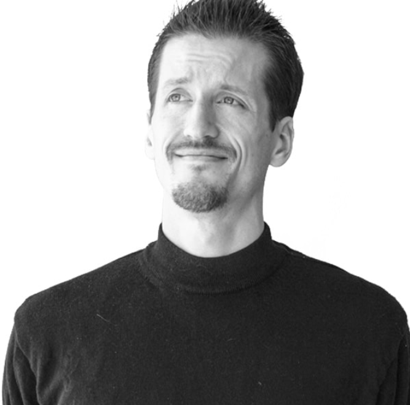

Network
Colleague: Emily Rodriguez
- Occupation: 2D Animator and Designer
- Education: Graduated SCAD (2020)-Magna Cum Laude
- Degree: B.A in Animation
- Experience Highlight: Freelance 2D animator on Adult Swim's Birdgirl, Episodes 201-206
- Personal Website
- LinkedIn Page
Emily Rodriguez is a friend of mine and freelance Animator, currently working at Awesome, Inc. in Atlanta, GA. We first met in a Public Speaking class at SCAD, and had the pleasure of serving as Art Director for her Senior Capstone film, VIVID during preproduction. She is a fantastic 2D animator with a growing list of credits, and a great resource as I learn both traditional and rigged 2D animation.
SCAD Professor: Jenna Zona
- Occupation: Animation Professor
- Education: Graduated SCAD (2015)-Magna Cum Laude
- Graduated Hartford Art School(2009)-Suma Cum Laude
- Degree: M.F.A in Animation (2015), B.F.A in Illustration(2009)
- Experience Highlight:Worked on projects for companies such as: Marvel, Cartoon Network, PBS Kids and more
- Personal Website
- LinkedIn Page
Jenna Zona is one of my Animation professors at SCAD. She is currently teaching my Animation 704: Concept to Production class, which serves as a full breakdown of all of the tools and techniques professional animators use within the ToonBoom Harmony animation software- including the creation of 2D master controller rigs for animation. Next quarter I will take my first Thesis class which is also being taught by Professor Zona.
Professional Contact: Christopher Udd
- Occupation: Art Director for Surreal Events
- Ongoing Experience Highlight: Currently oversees media solutions and hardware consultation for events or exhibitions
- Personal Website
Christopher Udd is the Art Director and leads the Art Team at Surreal Events. I have recently been shadowing Christopher to learn new pipelines and techniques within Unreal Engine 5, including auditing and optimizing art assets for use with Nanite and Lumen - two new features for virtualized geometry and real-time lighting, respectively.